- Módulo: Administración de Sistemas Operativos
- Título del trabajo Autenticación LDAP
- Componentes del grupo: Iván José Hernández Regalado
- Curso Académico: 2014/2015
- Fecha de entrega: 9 de Noviembre de 2014
Primero instalamos el paquete libpam-ldap para la autenticación en el cliente con el siguiente comando.
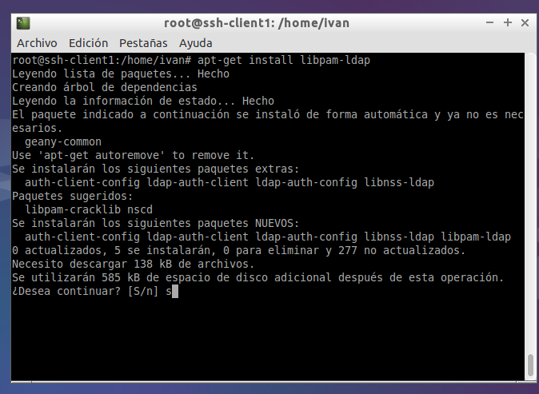
Ahora nos saldra una ventana de configuración de paquetes donde debemos especificar la IP del servidor LDAP.
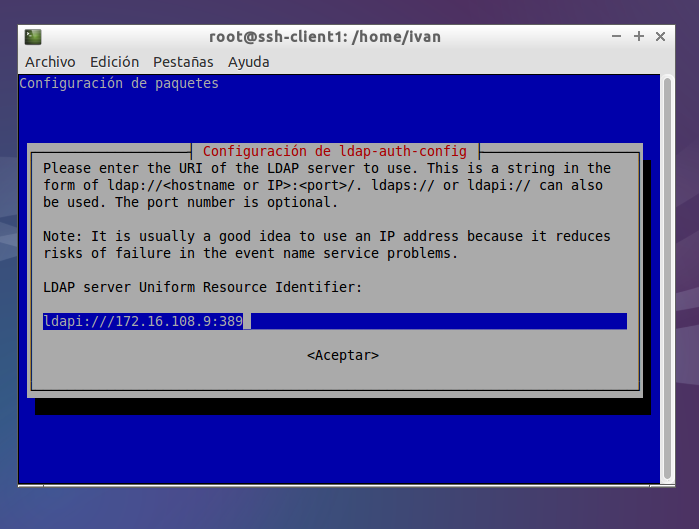
Escribimos el nombre del dominio LDAP y que versión es.
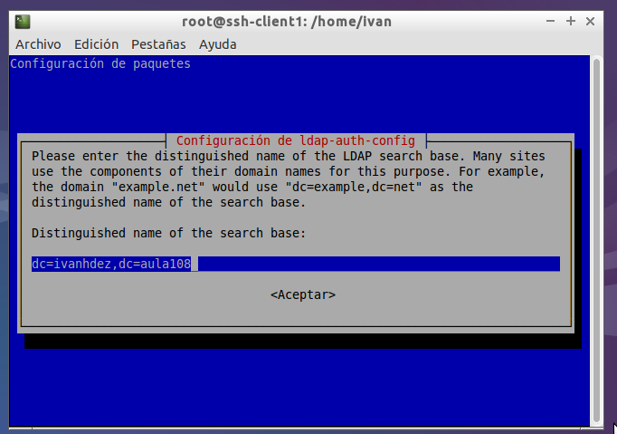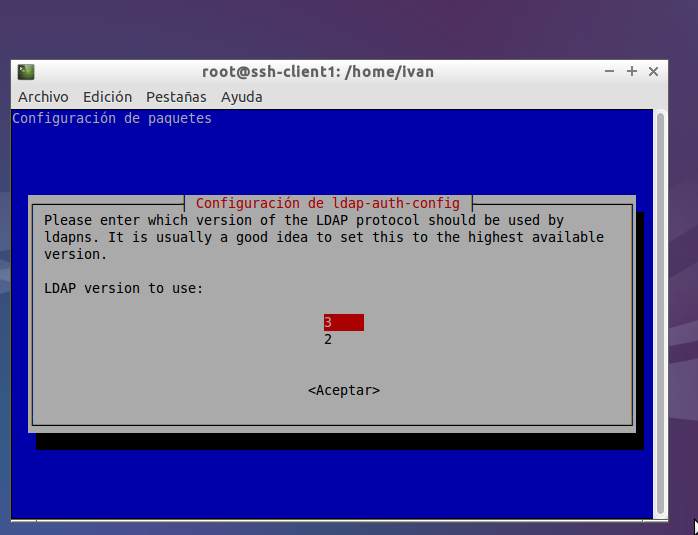
Marcamos que si queremos crear una base de datos local y que no necesita autenticación.
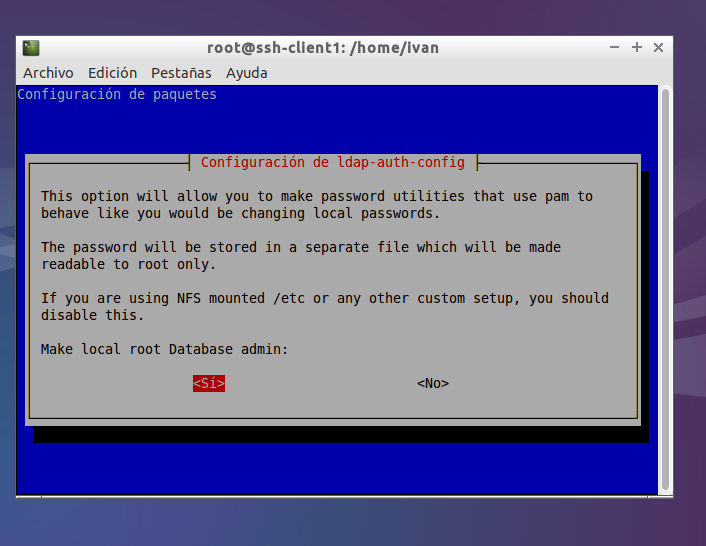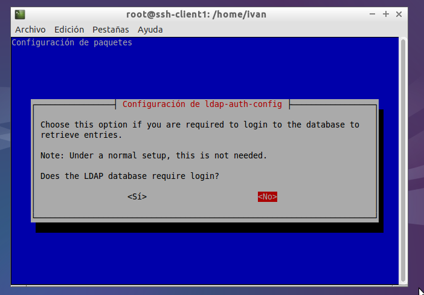
Especificamos la cuenta root del LDAP y su contraseña.
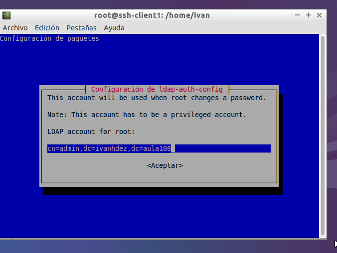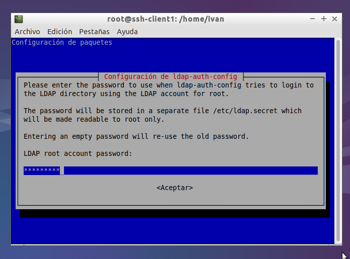
Elegimos que si en la siguiente pantalla y md5 en las constraseñas.
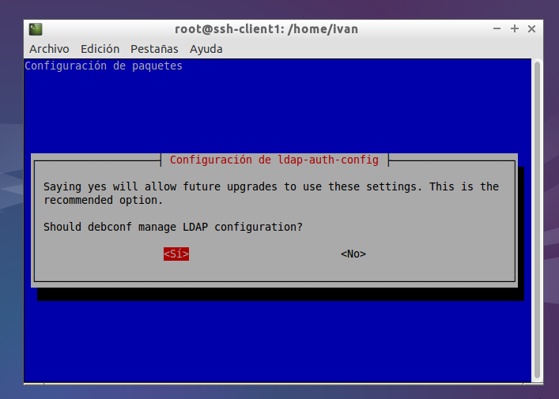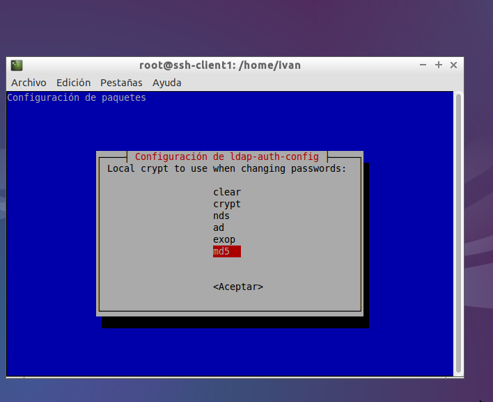
Ahora debemos ir al archivo ldap.conf y modificarlo de la siguiente manera: especificando la IP del servidor, el usuario admin del LDAP, el puerto por defecto que sea el 389 y modificando los nss_base_XXX.
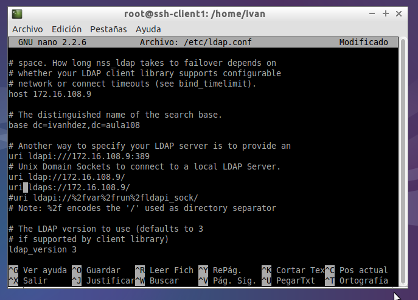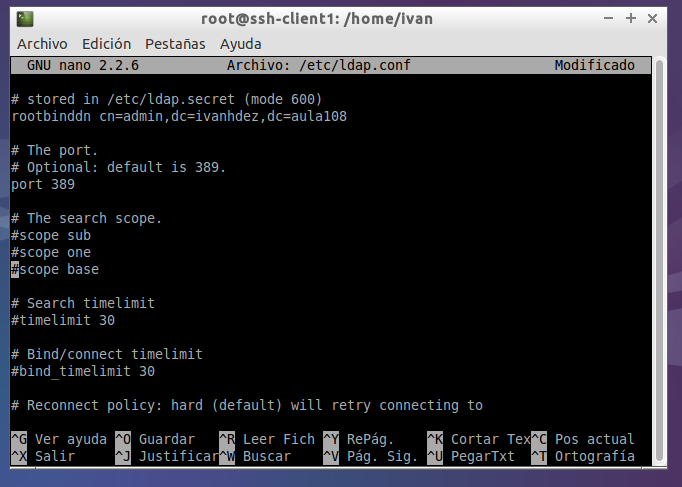 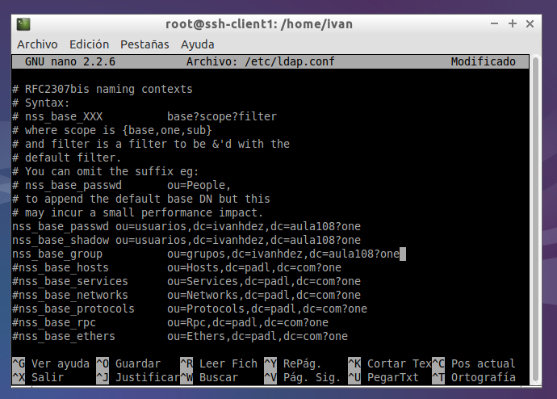
El siguiente archivo a configurar es el nsswitch.conf y lo pondremos de la siguiente forma:
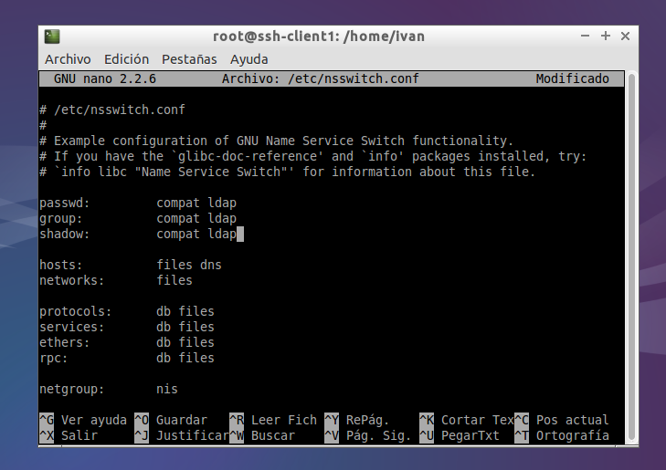
Lo siguiente es configurar los servicios pam, modificando los archivos de la siguiente manera:
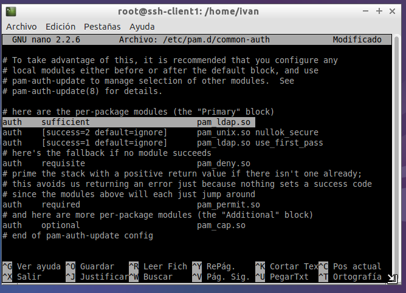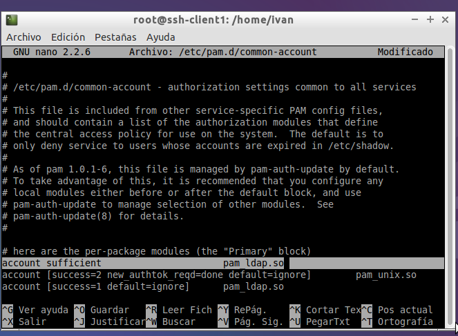 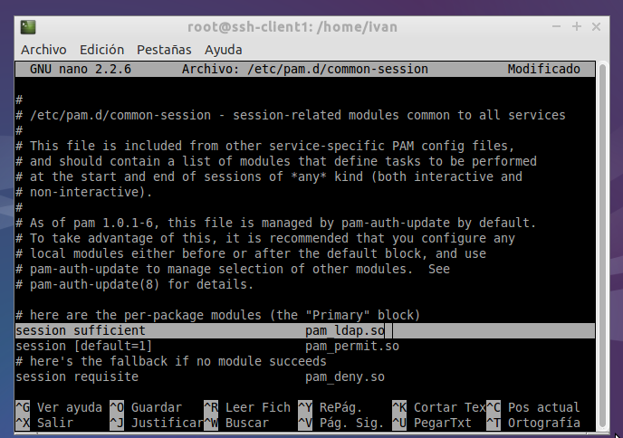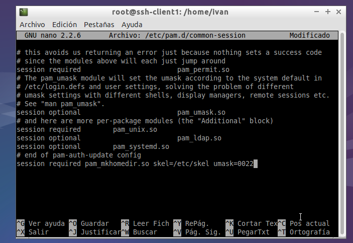 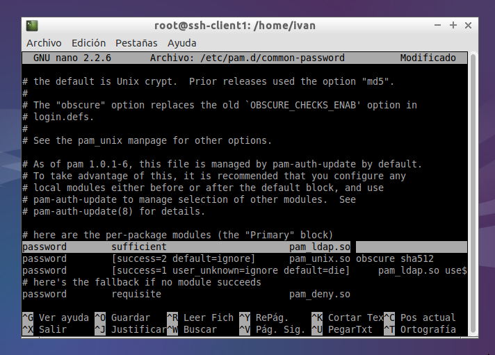
Al intentar conectarnos con un usuario del LDAP nos da un error de que no encuentra el grupo con la ID del LDAP, lo que debemos hacer añadirlos en el archivo "/etc/group" del cliente (este apartado fue idea mia para arreglar dicho problema, pero no debería hacer falta añadir nada en el /etc/group para que funcionara correctamente el servicio, por lo que debe haber algun fallo en la configuración solo que no tenemos el tiempo suficiente para hacer modificaciones hasta encontrar el fallo).
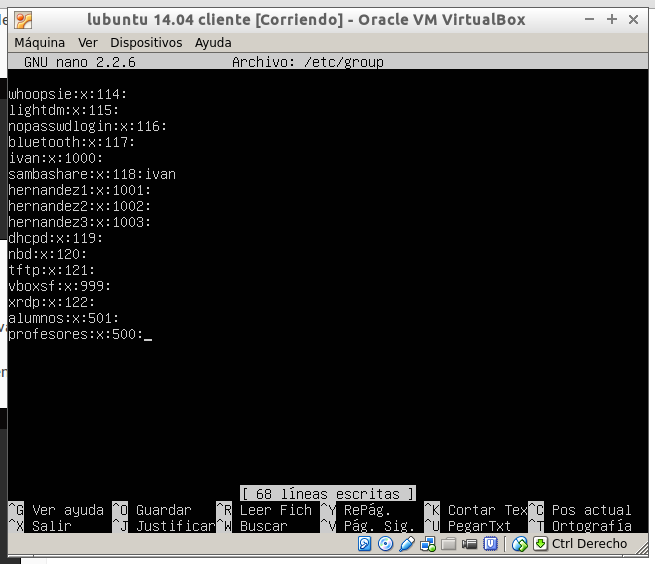
Podemos comprobar que nos podemos conectar con usuario LDAP usando el comando (su "nombre del usuario LDAP") y escribiendo la contraseña y observamos que se crea el directorio home del usuario por haber modificado el archivo common-session de la carpeta /etc/pam.d.
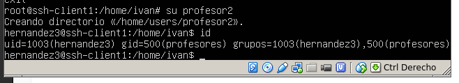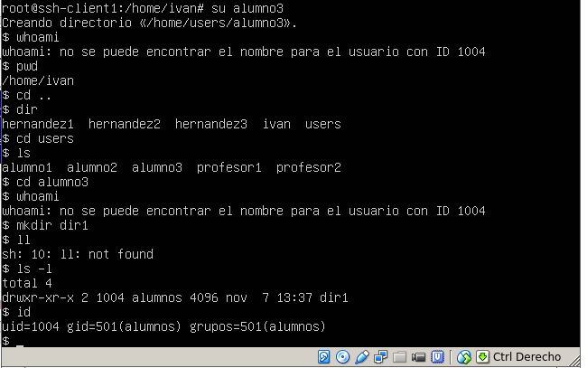
La prática nos está bien del todo, ya que el home que se crea al acceder con el usuario no es el que usa dicho usuario sino que usa otro, podemos observarlo en la captura anterior, y tambien el comando whoami está buscando el usuario en local aunque estemos conectados con un usuario de LDAP.